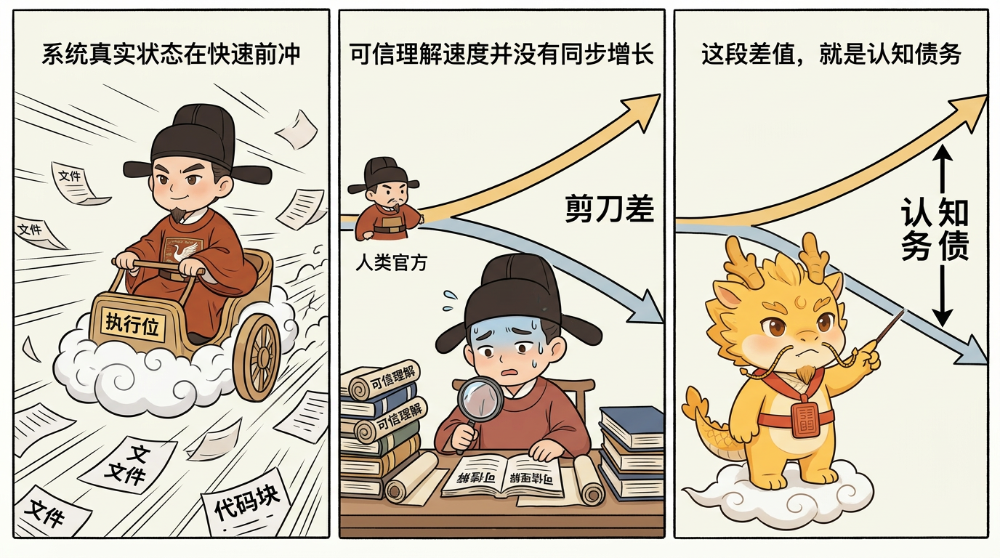

治理扩展、吞吐补偿与边界
数据宪法与 ER 图

数据宪法与 ER 图：让业务事实可维护
目录
这页解决什么问题
架构宪法能约束模块边界、依赖方向和运行流，但它还不能完整回答一个更贴近业务事实的问题：
这个系统里到底有哪些持久实体，它们怎样关联，哪些事实是来源，哪些只是派生、缓存或投影？
这类问题如果没有外置成 ER/data-model 层，agent 很容易在普通实现里顺手改掉：
- 主键、外键、唯一约束或状态字段含义
- 实体之间的关系和基数
- 源数据与派生数据的边界
- 迁移、回填和兼容策略
- API / ORM / schema 背后的持久化语义
这些变化看上去像实现细节，实际上是在改变业务事实。它们应该有更改宪法的严肃感。
最短定义
架构宪法管系统边界，数据宪法管持久事实。 ER 可以变，但必须通过
data-model-amend，不能混进普通施工合同。
普通合同要声明：
affected_data_entitiesunchanged_data_entitiesdata_model_deltarequires_er_amendmentmigration_requiredbackfill_required
这不是给合同加表演字段，而是让计划和执行都承认：数据事实一旦变动，认知债务和迁移债务会立刻出现。
为什么架构图还不够
架构图能告诉 agent：
- 哪些模块负责什么
- 文件归属哪里
- 依赖方向是否健康
- 哪些接口不能随手改
但 ER 图告诉 agent 另一组事实：
User、Order、Contract、Evidence这类实体是否真实存在- 一个实体是否拥有另一个实体
- 关系是一对一、一对多还是多对多
- 删除、归档、折叠、重命名时会影响哪些历史记录
- 哪个字段是来源事实，哪个字段只是展示投影
架构图减少“代码在哪里”的认知债务；ER 图减少“业务事实是什么”的认知债务。两层合在一起，agent 才不容易把系统改得能跑但事实变形。
数据宪法放在哪里
推荐放在：
dev_repo/architecture/data-model/
|-- README.md
|-- ER.md
|-- er.mmd
|-- entities.json
|-- relationships.json
|-- invariants.md
`-- migrations.md其中：
ER.md给人和 agent 读，解释实体、关系、来源与派生规则。er.mmd是 Mermaid ER 图，用于快速视觉参考。entities.json是实体目录，记录身份、状态、来源、所有者、置信度。relationships.json是关系目录，记录基数、引用字段、删除语义。invariants.md写普通合同不能破坏的数据不变量。migrations.md写迁移、回填和兼容预期。
接手旧项目时如何初始化 ER 图
接手旧项目时，不要先假设自己知道数据模型。
最小顺序是：
- 找真实来源：schema、ORM、migration、fixture、API contract、运行时文件、导入导出格式。
- 抽核心实体：只抽持久事实，不抽每个 DTO、临时对象或前端 view-model。
- 抽关系：记录基数、引用字段、删除或归档语义。
- 抽身份与状态：主键、唯一约束、外键式引用、枚举和状态机字段。
- 区分来源与派生：source、derived、cache、projection、generated 要写清楚。
- 标注置信度：
confirmed、inferred、unknown。
如果没有 schema 或 migration，就写 unknown / inferred。不要把猜测写成 confirmed。旧项目的第一版 ER 图可以不完整，但不能假装全知。
ER 图详细到什么程度
合适标准是：
详细到 agent 能判断数据变化是否需要修宪、是否需要迁移、是否会破坏兼容；不要详细到每个 DTO 和每个临时字段都入图。
每个实体至少回答：
entity_id:
purpose:
owning_architecture_node:
source_or_derived:
source_artifacts:
identity:
state_fields:
derived_from:
migration_notes:
requires_amendment_when:
confidence:每条关系至少回答：
relationship_id:
from_entity:
to_entity:
cardinality:
reference_fields:
deletion_semantics:
requires_amendment_when:
confidence:这比“数据库表清单”更能降认知债务，也比“全字段大全”更轻。
普通合同与数据模型修宪合同
普通合同可以在现有 ER 宪法下施工。
例如：
affected_data_entities:
- contract
unchanged_data_entities:
- campaign
- evidence_item
data_model_delta: none
requires_er_amendment: false
migration_required: false
backfill_required: false当变化触及下面任意一类，就要进入修宪合同：
- 新增、删除、重命名或改归属实体
- 改关系方向、基数、删除语义
- 改主键、外键式引用、唯一约束
- 改状态字段、枚举含义、状态机语义
- 把来源数据改成派生/缓存/投影，或反过来
- 新增 migration、backfill、compatibility 逻辑
- API / ORM / schema 变化影响持久化语义
修宪合同必须写明：哪部分变，哪部分不变，为什么现在的模型不够，如何迁移和回填，如何证明兼容。
迁移、回填与来源事实
数据模型最容易制造暗债的地方，是“代码改了，但旧事实怎么办”。
所以合同里要明确：
migration_required: 旧数据结构是否需要转换。backfill_required: 旧记录是否需要补字段、补索引、重算派生值。compatibility_expectations: 旧版本文件、记录、API payload 是否仍可读。source_or_derived: 这个字段或实体到底是来源事实，还是派生结果。
如果来源和派生冲突，先修来源事实，再更新投影。不要让生成物反过来统治事实。
一句话压舱
架构宪法让 agent 知道系统如何站立；数据宪法让 agent 知道事实如何相连。
它们共同把“我大概知道怎么改”变成“我知道哪些东西能改、哪些东西要修宪、改完以后旧事实如何继续成立”。